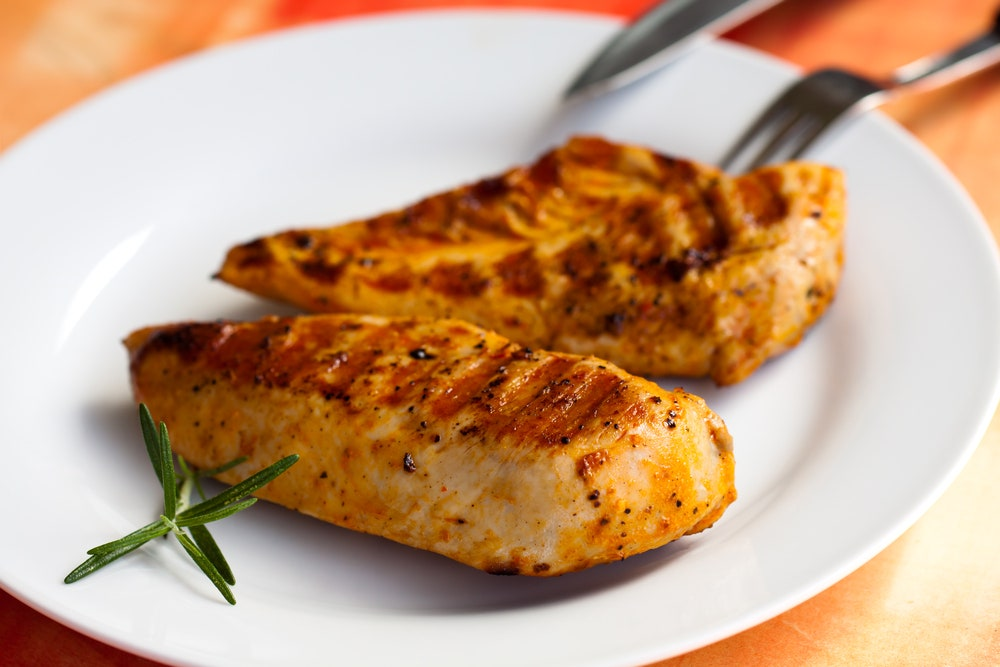

Baked chicken breast

Description
Simple basic recipe for cooking up a bunch of skinless boneless chicken breasts.
Ingredients
- 4 skinless, boneless chicken breast halves
- 2 tablespoons olive oil
- 1 tablespoon coarse sea salt
- 1 pinch Creole seasoning (such as Tony Chachere's®), or to taste
- 1 tablespoon water, or as needed
Steps
- Preheat convection oven to 400 degrees F (200 degrees C)
- Rub chicken breasts with olive oil and sprinkle both sides with salt and Creole seasoning. Place chicken in a broiler pan.
- Bake in the preheated oven for 10 minutes. Flip chicken and cook until no longer pink in the center and the juices run clear, about 15 minutes more. An instant-read thermometer inserted into the center should read at least 165 degrees F (74
degrees C).
- Remove chicken from pan. Pour water into the pan, while scraping the browned bits of food off of the bottom of the pan with a wooden spoon. Add more water if needed to dislodge the browned bits; serve alongside chicken.